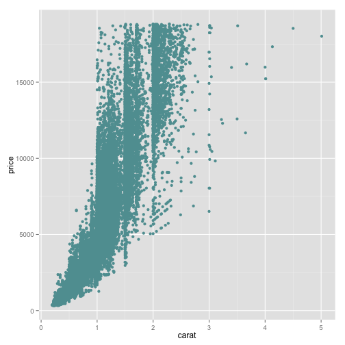

The open science stack
Better living through open science
twitter: @emhart_
What is open science??
library(ggplot2)
qplot(wt, mpg, data = mtcars)

The rise of open science
What are the advantages of open science
What is the open science stack?
Open lab notebook example
Snippet from Carl's notebook